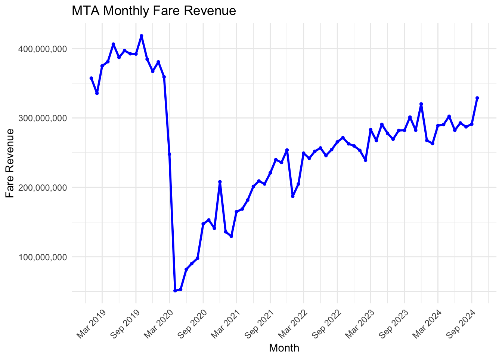

In March 2020, the Coronavirus-19 (COVID-19) pandemic that began in China reached America’s shores. What followed was a year and a half of stay-at-home orders, social distancing measures, and economic decline both in the United States and abroad. New York City was hit the hardest during the pandemic, with the city recording the most deaths and new cases in the country for nearly two months after the onset of its first cases. For New York City’s world-famous subway system, the pandemic brought economic ruin that, as I will explore in this report, has yet to be remedied nearly five years later. Using publicly available fiscal data (with a close examination of revenue data) collected primarily from the New York City Metropolitan Transportation Agency (NYCMTA), this report explores how the New York City Subway system has recovered since the onset of the COVID-19 pandemic, and examines whether two phenoma - the use of ride-share services such as Uber and Lyft, and the proliferation of remote work - have hindered or promoted the economic recovery of the NYCMTA.
TASK 1: Identifying Specific Questions
To assess the economic health of the MTA, I focused on measuring the flow of money into the subway system, specifically through fare revenue, as it constitutes the majority of the MTA’s funding. In examining the factors that might impact these revenues, I identified two key external influences: pre-pandemic, I decided to look at the rise of rideshare companies - such as Uber and Lyft - which were believed to divert passengers away from subway use, and post-pandemic, I analyzed the growing shift to remote work, which significantly reduced ridership on New York City’s subways. Although my team and I initially considered investigating the impact of fare evasion on the MTA’s revenues, we decided against incorporating such an analysis into this report due to time constraints and the complexity that would arise from such a multifaceted topic.
TASK 2: Idenitfying Data Sources
In identifying data sources for this project, I initially considered using the fare data provided by the Federal Transit Administration (FTA), which had been used in Mini Project One. However, I decided against it for two key reasons: first, the data was split into seven separate yearly datasets, making it unwieldy, and second, it lacked the level of detail I needed, particularly regarding the relationship between ridership and fare revenue. Instead, I used a publicly available dataset from the State of New York, which provided monthly MTA financial data from January 2019 onward. This dataset included both revenues and expenditures, broken down by type, allowing me to track monthly trends in revenue and gain a clearer picture of the MTA’s overall financial health, including operating costs and capital expenditures.
For the rideshare revenue analysis, I was unable to find direct data on rideshare revenues, so I constructed the dataset by extracting monthly ridership trip data from publicly available City of New York datasets. I then estimated revenue by multiplying the total number of trips by the average fare per ride, derived from pricing information provided by Uber and Lyft (the two largest rideshare companies in NYC), along with the maximum trip distance in New York City (8 miles).
To evaluate the impact of remote work on MTA revenues, I encountered challenges in locating consistent data on remote work trends. As a result, I relied on a 2023 study conducted by the MTA, which provided key insights into how shifts in work patterns were affecting subway ridership and, by extension, fare revenue.
TASK 3: MTA Data Import, Cleaning, Visualization, and Analysis
To begin my analysis, I need to load the necessary packages to manipulate the data I will be importing. There are five packages in total I need to load.
Code
# Install and load the necessary packageslibrary(readr)library(dplyr)
Attaching package: 'dplyr'
The following objects are masked from 'package:stats':
filter, lag
The following objects are masked from 'package:base':
intersect, setdiff, setequal, union
Code
library(tidyr)library(lubridate)
Attaching package: 'lubridate'
The following objects are masked from 'package:base':
date, intersect, setdiff, union
Code
library(ggplot2)
After loading my packages into the R environment, I can now begin my data import. The first data that I will import into my project is data from the NYCMTA website containing the agency’s revenues and expenditures for every month since January 2019.
Code
# Link the URL to the CSV fileurl <-"https://data.ny.gov/api/views/yg77-3tkj/rows.csv?accessType=DOWNLOAD"# Read the CSV file into R as a dataframe from the URLmtafinancials2019to2024 <-read_csv(url)
Rows: 308304 Columns: 10
── Column specification ────────────────────────────────────────────────────────
Delimiter: ","
chr (6): Scenario, Expense Type, Agency, Type, Subtype, General Ledger
dbl (3): Fiscal Year, Financial Plan Year, Amount
date (1): Month
ℹ Use `spec()` to retrieve the full column specification for this data.
ℹ Specify the column types or set `show_col_types = FALSE` to quiet this message.
Now that the data has been imported as a dataframe, it must be cleaned. The raw imported data contains information on both revenues and expenditures; however, I only need information on fare revenues. Furthermore, the raw data also contains different types of revenues; so I will need to filter it for specifically fare revenue in order to conduct my analysis.
Code
# Filter the dataframe for transit data from the NYC Transit division and financial data that is confirmedmtafinancials2019to2024 <- mtafinancials2019to2024 |>filter(Agency =="NYCT", Scenario =="Actual")# Filter the dataframe for revenue data, then sum the revenue based on monthmtafarerevenue2019to2024 <- mtafinancials2019to2024 |>filter(Type =="Total Revenue", `General Ledger`=="Farebox Revenue") |>group_by(Month) |>summarise(Fare_Revenue =sum(Amount, na.rm =TRUE))
Now that the data has been filtered by revenue type and grouped by month, I will create a plot to visualize the new dataframe. Here, I am interested in identifying if there are any trends one might be able to see in the data.
Code
# Create a plot of the revenueggplot(mtafarerevenue2019to2024, aes(x = Month, y = Fare_Revenue)) +geom_line(color ="blue", size =1) +geom_point(color ="blue", size =1) +labs(title ="MTA Monthly Fare Revenue",x ="Month",y ="Fare Revenue") +theme_minimal() +scale_x_date(date_labels ="%b %Y", date_breaks ="6 months") +theme(axis.text.x =element_text(angle =45, hjust =1))

The first phase of my analysis is now complete, and several key trends are already emerging. First, the MTA’s monthly fare revenue experienced a significant decline during the COVID-19 pandemic, reaching near-record lows. Second, despite nearly five years having passed since the onset of the pandemic and three years since its “official” end, the MTA’s fare revenue has yet to fully recover to pre-pandemic levels. Lastly, I observed noticeable dips in fare revenue during late 2020 and late 2021, which align with the winter seasons and surges in COVID-19 variants and case numbers.
Keeping these findings in mind, I’ll now move onto the next part of my analysis: examining the revenues of NYC’s two largest rideshare companies by market share; Uber and Lyft.
TASK 4: Rideshare Data Import, Cleaning, Visualization, and Analysis
To continue my analysis, I will need to import data on ridership for NYC’s two largest rideshare companies by market share: Uber and Lyft. To do this, I will utilize datasets provided by the City of New York containing ridership figures for both companies.
Code
# Link the URL to the CSV file for Uber Ridership Dataurl <-"https://data.cityofnewyork.us/resource/2v9c-2k7f.csv?$query=SELECT%20base_license_number%2C%20base_name%2C%20dba%2C%20year%2C%20month%2C%20month_name%2C%20total_dispatched_trips%2C%20total_dispatched_shared_trips%2C%20unique_dispatched_vehicles%20SEARCH%20%22uber%22"# Read the CSV file into R as a dataframe from the URLuber_ride_stats <-read_csv(url)
Rows: 112 Columns: 9
── Column specification ────────────────────────────────────────────────────────
Delimiter: ","
chr (4): base_license_number, base_name, dba, month_name
dbl (5): year, month, total_dispatched_trips, total_dispatched_shared_trips,...
ℹ Use `spec()` to retrieve the full column specification for this data.
ℹ Specify the column types or set `show_col_types = FALSE` to quiet this message.
Code
# Link the URL to the CSV file for Lyft Ridership Dataurl <-"https://data.cityofnewyork.us/resource/2v9c-2k7f.csv?$query=SELECT%20base_license_number%2C%20base_name%2C%20dba%2C%20year%2C%20month%2C%20month_name%2C%20total_dispatched_trips%2C%20total_dispatched_shared_trips%2C%20unique_dispatched_vehicles%20SEARCH%20%22lyft%22"# Read the CSV file into R as a dataframe from the URLlyft_ride_stats <-read_csv(url)
Rows: 109 Columns: 9
── Column specification ────────────────────────────────────────────────────────
Delimiter: ","
chr (4): base_license_number, base_name, dba, month_name
dbl (5): year, month, total_dispatched_trips, total_dispatched_shared_trips,...
ℹ Use `spec()` to retrieve the full column specification for this data.
ℹ Specify the column types or set `show_col_types = FALSE` to quiet this message.
After importing my data, I will clean it by filtering for records from 2017 onward and selecting only the columns relevant to my analysis. Additionally, I will need to convert my ridership statistics into a revenue estimate. To do this, I will first multiply the average price per mile for each rideshare company by the average distance traveled by a rideshare customer in NYC. Then, I will multiply this value by the number of trips taken in a given month to calculate the estimated revenue.
Code
# Cleaning the Uber Data for Data from 2017 Onwarduber_ride_stats2017to2024 <- uber_ride_stats |>filter(year >=2017) |>select(base_name, year, month, total_dispatched_trips) |>mutate(total_estimated_revenue = total_dispatched_trips *14.48) |>arrange(year, month)# Cleaning the Lyft Data for Data from 2017 Onwardlyft_ride_stats2017to2024 <- lyft_ride_stats |>filter(year >=2017) |>select(base_name, year, month, total_dispatched_trips) |>mutate(total_estimated_revenue = total_dispatched_trips *14.56) |>arrange(year, month)
After cleaning my datasets, I will merge them into a single dataset and combine the “year” and “month” columns into a new column called “date.”
Code
# Combine the Uber and Lyft datarideshare_stats2017to2024 <-bind_rows(uber_ride_stats2017to2024, lyft_ride_stats2017to2024)# Creating a date column combining the year and month columnsrideshare_stats2017to2024$date <-make_date(rideshare_stats2017to2024$year, rideshare_stats2017to2024$month, 1)
My dataset is now ready for visualization. I believe a double line graph would be the most effective way to represent the scales and differences in the data, as well as to highlight any trends.
Code
# Create a plot of the total car trips for Uber and LyftsuppressWarnings(ggplot(rideshare_stats2017to2024, aes(x = date, y = total_estimated_revenue, color = base_name, group = base_name)) +geom_line(size =1) +geom_point(size =1) +labs(title ="Uber and Lyft Monthly Estimated Revenue",x ="Month",y ="Estimated Revenue",color ="Company") +theme_minimal() +scale_x_date(date_labels ="%b %Y", date_breaks ="6 months") +scale_color_manual(values =c("UBER"="black", "LYFT"="pink")) +theme(axis.text.x =element_text(angle =45, hjust =1)))
The second phase of my analysis is now complete, and several key insights have emerged. First, it is clear from the data that Uber holds the largest market share in the NYC rideshare market. Second, similar to the MTA, rideshare companies experienced a significant revenue decline during the pandemic, with a sharp drop in revenue at the onset of the crisis, followed by a steady recovery beginning in March 2021. Third, and perhaps most notably, Uber has yet to return to its pre-pandemic revenue levels, while Lyft has surpassed its pre-pandemic revenues. This suggests that, in the post-pandemic period, Lyft may be gaining market share at the expense of Uber.
Building on these findings, as well as my earlier analysis of the MTA’s fare revenue, I will now examine both datasets in relation to one another, exploring their interdependencies or potential independence within the broader context of the analysis.
TASK 5: MTA and Rideshare Data in Context
The final step of my revenue analysis involves plotting the MTA fare revenue alongside Uber and Lyft rider revenue to assess potential dependencies between these factors. To do this, I will first re-clean the combined rideshare dataset to extract data starting from 2019, aligning it with the MTA dataset. Then, I will separate the rideshare data into independent datasets for Uber and Lyft.
Code
# Combine, clean, and plot the MTA, Uber, and Lyft Data# Step 1: Filter the data for 2019 onwardmtafarerevenue2019to2024 <- mtafarerevenue2019to2024 %>%filter(Month >="2019-01-01")rideshare_stats2017to2024 <- rideshare_stats2017to2024 %>%filter(date >="2019-01-01")# Step 2: Separate the rideshare data into Uber and Lyftrideshare_uber <- rideshare_stats2017to2024 %>%filter(base_name =="UBER")rideshare_lyft <- rideshare_stats2017to2024 %>%filter(base_name =="LYFT")
After recleaning my rideshare revenue data, I will merge it with the MTA fare revenue data by date into a single comprehensive dataset. Additionally, I will distinguish each of the three variables — MTA revenue, Uber revenue, and Lyft revenue — to ensure that the data for each factor remains separate and does not overlap during the plotting process.
Code
# Step 3: Merge the datasets# Ensure the "Month" and "date" columns are of Date class for proper mergingmtafarerevenue2019to2024$Month <-as.Date(mtafarerevenue2019to2024$Month)rideshare_uber$date <-as.Date(rideshare_uber$date)rideshare_lyft$date <-as.Date(rideshare_lyft$date)# Merge the MTA dataset with the Uber and Lyft datasets by monthmerged_data_uber <-left_join(mtafarerevenue2019to2024, rideshare_uber, by =c("Month"="date"))merged_data_lyft <-left_join(mtafarerevenue2019to2024, rideshare_lyft, by =c("Month"="date"))# Step 4: Combine the data for plottingcombined_data <-bind_rows( merged_data_uber %>%select(Month, Fare_Revenue, total_estimated_revenue) %>%mutate(Rideshare ="UBER", Revenue = total_estimated_revenue), merged_data_lyft %>%select(Month, Fare_Revenue, total_estimated_revenue) %>%mutate(Rideshare ="LYFT", Revenue = total_estimated_revenue)) %>%mutate(Rideshare =factor(Rideshare, levels =c("UBER", "LYFT"))) # Ensure UBER and LYFT are factors for proper coloring
Finally, I will plot the merged dataset to visualize all three variables at once.
Code
# Step 5: Plot the dataggplot(combined_data, aes(x = Month)) +geom_line(aes(y = Fare_Revenue, color ="MTA Fare Revenue"), size =1) +geom_line(aes(y = Revenue, color = Rideshare), size =1) +labs(title ="Revenue Comparison: MTA vs Rideshare (UBER & LYFT)",x ="Month",y ="Revenue",color ="Agency" ) +scale_color_manual(values =c("MTA Fare Revenue"="blue", "UBER"="black", "LYFT"="pink")) +theme_minimal() +theme(legend.position ="top")
The analysis of MTA, Uber, and Lyft revenues in context of each other reveals a strong correlation between the three, with their respective graphs closely mirroring each other, particularly in the post-pandemic period. This suggests that rather than being interdependent, MTA fare revenue and rideshare revenue are likely better understood as reflecting broader patterns in NYC movement and travel. The similar trends in their recoveries — marked by a sluggish rebound — indicate that Uber and Lyft ridership are not significantly impacting MTA revenues. Instead, both modes of transportation appear to be responding to the same external factors, such as changes in mobility preference and consumer behavior following the pandemic.
TASK 6: Remote Work in Context
While hard data on the exact number of NYC workers or the percentage working from home remains unavailable, the MTA has provided key insights into how the rise of remote work has influenced subway ridership in 2023; a crucial factor in determining fare revenues. The MTA has found that in the aftermath of the pandemic, a fundamental shift in commuting patterns has emerged, with discretionary travel now more common than traditional daily commutes. Additionally, as telecommuting has become more widespread, the regular five-day commute has significantly declined. As a result, Tuesdays, Wednesdays, and Thursdays, now represent the highest commuter traffic days, reflecting this shift in work schedules.
Furthermore, the recovery of subway ridership post-pandemic has been uneven. While weekday ridership is recovering at a slower pace, at 66% of pre-pandemic levels, weekend ridership has rebounded more strongly, reaching 77% of pre-pandemic levels. This disparity underscores how changes in work habits have altered not just the volume of daily commuters, but also the broader patterns of subway usage - and thus collected fare revenues - across different days of the week.
CONCLUSION
This analysis highlights the significant challenges and ongoing recovery of the New York City Subway system in the post-pandemic period. Despite nearly five years having passed since the onset of COVID-19, the MTA’s fare revenue has yet to return to pre-pandemic levels, with noticeable dips in late 2020 and 2021 during winter surges in COVID-19 cases. This slow recovery can be partly attributed to a fundamental shift in commuting patterns, with the rise of remote work contributing to the decline of the traditional five-day commute. The MTA’s data reveals that weekdays are experiencing a slower recovery, with commuter ridership at only 66% of pre-pandemic levels, while weekend ridership has fared better, at 77% of pre-pandemic levls.
Furthermore, the rise of ride-share services — particularly Uber and Lyft — has had a limited impact on MTA revenues. During the pandemic, both companies experienced significant declines in revenue, and post-pandemic, Uber has yet to return to pre-pandemic levels, while Lyft has surpassed its previous revenue figures, indicating a possible shift in market share. Despite these shifts, the revenue trends for both companies closely mirror those of the MTA, suggesting that Uber and Lyft may be better understood as indicators of post-pandemic movement in NYC rather than as direct factors influencing each other’s performance.
Ultimately, it is clear that the rise in telecommuting and subsequent change in commuter habits has been among the most significant factors hindering the MTA’s economic recovery. Moving forward, adapting to this new reality will be crucial for the MTA as it seeks to adjust its strategies to drive up both ridership and revenue.